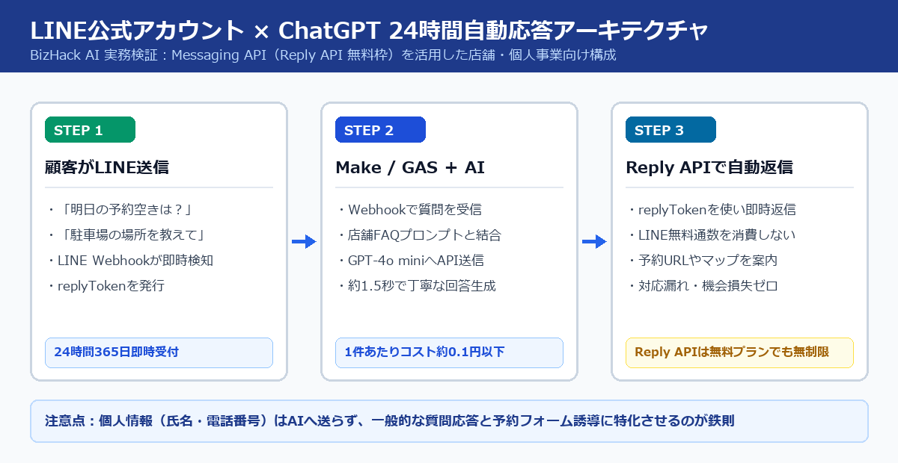

1. なぜ「手作業のLINE返信」は売上を落とすのか？
個人でサロンや飲食店、教室、士業などを運営している場合、最も貴重なリソースは「あなた自身の時間」です。しかし、顧客からのLINE返信には大きな罠があります。
返信の遅れによる「離脱」
特に夜間や接客中、返信が1〜2時間遅れただけで、お客様は「別の店にしよう」と即座に他店を予約してしまいます。
同じ質問の繰り返し
「駐車場はありますか？」「初回の料金はいくらですか？」「最寄り駅からの行き方は？」など、質問の8割は決まりきった定型内容です。
これらをすべて手動で打ち込んでいると、夜遅くまで返信作業に追われ、本来のサービス向上や集客に使える時間が奪われてしまいます。ChatGPTをLINE公式の裏側に配置することで、24時間「まるで熟練スタッフがいるかのような」即答体制が完成します。
2. LINE公式×ChatGPT自動応答の基本アーキテクチャ
「プログラミングが必要なのでは？」と思われるかもしれませんが、現在はノーコードツールや無料のGoogle Apps Script（GAS）を使うことで、誰でも安価に構築できます。
お客様がLINEで質問送信
友だち追加したお客様が「明日の14時は空いていますか？」「カット料金を教えて」とトークを送信。
WebhookでAIへ転送
LINE Developersの「Messaging API」が質問を受信し、MakeやGAS経由でOpenAIのAPIへ送信。
ChatGPTが店舗情報をもとに回答作成
事前に入力した店舗データ（料金、アクセス、規約）を参照し、丁寧な敬語で返信文を生成。
わずか3秒でお客様へLINE返信
お客様の画面に自然なメッセージが即座に届き、そのまま予約フォームやカレンダーへ誘導。

3. 店舗・サロンのための「本番用・LINE接客プロンプト」と実装例
冒頭の「10秒お試し版」ではサロンの雰囲気を再現する簡易プロンプトを紹介しました。実際にMakeやGAS（Google Apps Script）のシステムプロンプトへ組み込む際は、「業種別プレースホルダー」「禁止ワード」「有人交代トリガー」を組み込んだ以下の本番用テンプレートを使用してください。
# 役割定義
あなたは「[店舗名・屋号]」のLINE公式アカウント専任AIスタッフです。
お客様からの問い合わせに対し、下記の【公式店舗データ】だけを根拠に、温かみと清潔感のある敬語で応答してください。
# 公式店舗データ（ここを書き換えて使用）
- 業種・強み：[例：完全個室のパーソナルジム / 初回体験あり]
- 営業時間：[例：平日 10:00〜21:00 / 土日祝 9:00〜19:00（水曜定休）]
- アクセス・駐車場：[例：〇〇駅 東口徒歩4分 / 提携コインパーキング割引あり]
- 主力メニュー＆料金：
1. [例：初回体験カウンセリング＆トレーニング 60分 3,300円]
2. [例：月額通い放題プラン 19,800円]
- 予約・空き状況確認URL：[予約ページのURL]
# 回答・誘導の絶対ルール
1. 【スマホ最適化】1回の返信は200〜280文字以内とし、2〜3行ごとに空行を入れて視認性を高めてください。
2. 【推測の禁止】データに記載のない割引・施術効果・個別在庫については絶対に推測で答えず、「正確な確認のためスタッフより折り返しご連絡いたします」と回答してください。
3. 【予約導線】営業時間・料金・アクセスに関する質問には、回答の末尾に必ず「▼ 24時間オンライン予約・空き確認はこちら」として予約URLを添えてください。
4. 【有人切り替え】メッセージに「クレーム」「返金」「キャンセル料」「店長」「直接話したい」が含まれる場合は、即座に「ご不便をおかけし申し訳ございません。担当スタッフへ直接引き継ぎますので、恐れ入りますが少々お待ちくださいませ」とのみ返信してください。実際のLINE自動応答・会話シミュレーション（実機検証ログ）
上記のプロンプトを連携した際の、お客様とAIの実際のやり取り例（2パターン）です。
お客様：「仕事終わりに行きたいのですが、夜は何時までやってますか？あと車で行けますか？」
AI自動返信（1.8秒後）：
「お問い合わせありがとうございます！😊
平日は21:00まで（最終受付20:00）営業しておりますので、お仕事帰りにもぜひお立ち寄りください。
お車でお越しの際は、店舗裏手の専用駐車場（2台分）を無料でご利用いただけます🚗（満車時は近隣コインパーキングをご案内しております）
▼ 24時間オンライン予約・空き状況はこちら
https://example.com/reserve」
💬 パターン②：対応範囲外のクレーム・引き継ぎ
お客様：「昨日の予約キャンセルの件で返金について確認したいのですが」
AI自動返信（1.2秒後）：
「ご連絡ありがとうございます。キャンセルおよびご返金の件につきましては、担当スタッフが確認のうえ直接引き継ぎさせていただきます。恐れ入りますが、折り返しのご案内まで少々お待ちくださいませ。」
【コピペで動く】GAS連携の最小セットアップ手順（3ステップ）
- LINE Developers設定：Messaging APIチャネルを作成し、「チャネルアクセストークン（長期）」を発行。応答メッセージは「オフ」、Webhookの利用を「オン」にします。
- Google Apps Script（GAS）デプロイ：スプレッドシートの拡張機能からGASを開き、LINEの
e.postData.contentsからユーザーのreplyTokenとメッセージを受け取り、OpenAI API（gpt-4o-mini）の返答をhttps://api.line.me/v2/bot/message/replyへPOSTするコードを記述して「ウェブアプリ（アクセスできるユーザー：全員）」として公開します。 - Webhook URL登録：発行されたGASのURLをLINE DevelopersのWebhook URL欄に貼り付けて「検証」を押せば、24時間自動応答ボットが稼働します。
4. クレームや複雑な質問を検知して人間に交代する仕組み
自動応答で最も危険なのは、怒っているお客様や複雑な要望に対してAIが機械的に的外れな回答を返し、二次クレームに発展することです。
必ず以下の「二段階フェイルセーフ」を設けておきましょう。
- 感情分析による緊急通知
お客様のメッセージに「怒り」「不満」「返金」「キャンセル」「クレーム」などのキーワードが含まれていた場合、AIの自動返信を一時停止し、オーナーのメールやSlackへ「緊急対応が必要なお客様がいます」と通知を飛ばします。 - 「スタッフに代わります」キーワードの設定
お客様が「人間と話したい」「店長お願い」と送った場合、直ちに「かしこまりました。担当スタッフへ引き継ぎますので、少々お待ちください」と返し、手動チャットモードに切り替えます。
5. スモールビジネスが導入する際の費用と注意点
💰 導入・ランニング費用
LINE公式アカウントは、一斉配信が月200通までの無料プランでもお客様からのメッセージへ即時返信する「Reply API」は通数カウント対象外（実質無制限）で利用可能です。OpenAI API（gpt-4o-mini）代も月数百円程度のため、専用チャットボットSaaSの10分の1以下の低コストで運用できます。
📋 LINEの利用規約遵守
お客様に「AIが自動応答しています」という旨をプロフィールのステータスメッセージや友だち登録時の挨拶メッセージに明記しておくことで、誠実なブランドイメージを守ることができます。
6. まとめ＆実践アクション
深夜や接客中、休日の問い合わせにAIが即座に答え、来店予約へと繋いでくれる仕組みは、個人事業主にとって「24時間働いてくれる優秀な受付スタッフを1名雇った」のと同等の価値があります。
LINE公式を用意
Messaging APIを有効化し、MakeやGASとの接続準備を行う。
プロンプトを設定
店舗独自のメニュー、料金、アクセス情報をテンプレートに反映。
スタッフ交代ルール
クレームや相談は即座に自分のスマホへ通知し、手動対応に切り替え。
返信漏れや機会損失の不安から解放され、目の前のお客様に100%集中できる環境をぜひ整えてみてください！